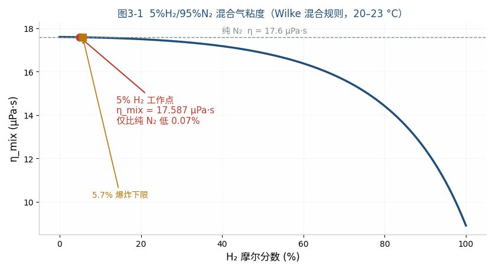
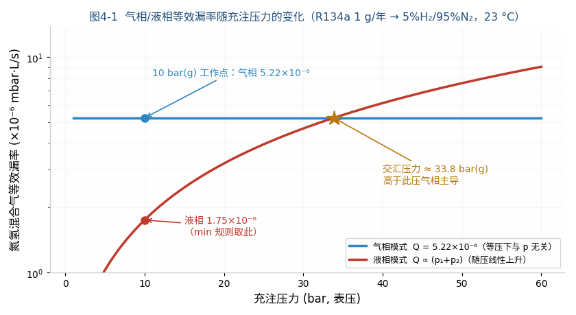
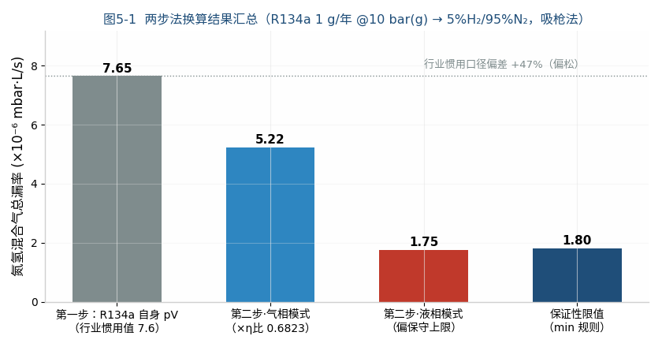

| Item | Content |
|---|---|
| Document No. | RM-CAL-2026-0731-EN |
| Version | V1.0 |
| Date | 2026-07-31 |
| Prepared by | Shanghai Realmeter Instrument Co., Ltd. |
| Author | Xie Fangping |
| Purpose | Theoretical basis for limit setting and instrument configuration of N₂/H₂ tracer-gas leak testing (equal pressure 10 bar(g)) for R134a systems |
Task: Convert the R134a annual leakage 1 g/year @ 10 bar(g) into the equivalent leak rate (mbar·L/s) for hydrogen-nitrogen tracer gas (5% H₂ + 95% N₂, non-flammable safe concentration), with the tracer gas charged at the same pressure as the refrigerant duty (10 bar(g)), computed separately for gas-phase and liquid-phase leak modes.
| No. | Boundary condition | Value |
|---|---|---|
| BC-1 | Pressure reference | Gauge pressure; tracer gas and refrigerant at the same 10 bar(g) |
| BC-2 | Test method | N₂/H₂ sniffer method (ambient atmosphere outside, p₂ = 1 atm) as primary; accumulation/vacuum method differences noted separately |
| BC-3 | Tracer gas | 5% H₂ + 95% N₂ mixture (H₂ below the 5.7% lower flammability limit, safe) |
| BC-4 | Leak-point phase | Gas-phase and liquid-phase modes computed separately; limit by the min rule |
| BC-5 | Temperature | 23 °C (296.15 K) |
| Symbol | Parameter | Value (23 °C) | Source |
|---|---|---|---|
| M_134a | R134a molecular weight | 102.03 g/mol | SDS/REFPROP[1] |
| η_v | R134a vapour dynamic viscosity | 12.0 µPa·s | Saturated vapour at 25 °C: 12.1–12.2 µPa·s (REFPROP family)[2][3]; literature range 11.77–12.2 µPa·s[4]; 12.0 µPa·s adopted |
| η_l | R134a saturated liquid viscosity | 195 µPa·s | 0.195 mPa·s at 25 °C (REFPROP family)[3]; literature table 190.46 µPa·s[4]; 195 µPa·s adopted |
| ρ_l | R134a saturated liquid density | 1207 kg/m³ | 1207 kg/m³ at 25 °C (REFPROP family)[3] |
| p_sat | R134a saturation pressure at 23 °C | ≈ 6.3 bar(abs) | 6.654 bar(abs) at 25 °C[3]; 23 °C ≈ 6.3 bar(abs) via Clausius–Clapeyron |
| η_N2 | Nitrogen dynamic viscosity | 17.6 µPa·s | Measured 1.76×10⁻⁵ Pa·s at 20 °C[5]; Sutherland 20→23 °C correction (+0.5%) negligible |
| η_H2 | Hydrogen dynamic viscosity | 8.9 µPa·s | Measured 0.89×10⁻⁵ Pa·s at 20 °C[5] |
| M_N2 / M_H2 | N₂/H₂ molecular weight | 28.014 / 2.016 g/mol | Standard atomic weights (Wilke inputs) |
| R | Molar gas constant | 8.314 J/(mol·K) | CODATA |
| T | Calculation temperature | 296.15 K | BC-5 (23 °C) |
| η_mix | 5%H₂/95%N₂ mixture viscosity | 17.59 µPa·s | Computed herein by the Wilke mixing rule (§3.2) |
Notes on value selection: 1. The 2 K gap between 23 °C and the 25 °C literature data is small: the R134a vapour-viscosity temperature coefficient is about +0.03 µPa·s/K, liquid viscosity about −2%/K — both within the cited literature ranges. Representative values are adopted directly; the residual deviation is already covered by the §7 uncertainty budget (±3–5%). Per-degree interpolation is deliberately avoided to prevent false precision. 2. The 20→23 °C difference for N₂/H₂ viscosities is <1%, below the Wilke rule's own uncertainty (±2%); the 20 °C values are used as-is. 3. Reliability grading: REFPROP states R134a viscosity uncertainty of 3% (liquid) and 3–5% (vapour)[6]; N₂/H₂ viscosities are classical measured values (<1%); the mixture viscosity uses the Wilke semi-empirical mixing rule (well validated on hydrocarbon/hydrogen blends[7]).
The equivalent leak-channel diameter is about 1–2 µm; at 10 bar, Kn ≈ 0.005 ≪ 0.01 — the flow in the channel is continuum viscous (laminar) flow, so the compressible laminar formula applies. Misusing the molecular-flow formula would overestimate by about 10×.
$$\eta_{mix}=\sum_{i}\frac{x_i\,\eta_i}{\sum_j x_j\,\phi_{ij}},\qquad \phi_{ij}=\frac{\left[1+\left(\eta_i/\eta_j\right)^{1/2}\left(M_j/M_i\right)^{1/4}\right]^2}{\sqrt{8\left(1+M_i/M_j\right)}}$$
Inputs: x_H₂ = 0.05, x_N₂ = 0.95, η_H₂ = 8.9 µPa·s, η_N₂ = 17.6 µPa·s, M_H₂ = 2.016, M_N₂ = 28.014 g/mol.
Step 1: combination parameters φ_ij (φ_ii ≡ 1):
$$\phi_{H_2,N_2}=\frac{\left[1+\left(8.9/17.6\right)^{1/2}\left(28.014/2.016\right)^{1/4}\right]^2}{\sqrt{8\left(1+2.016/28.014\right)}}=\frac{[1+0.7110\times1.9318]^2}{\sqrt{8.576}}=\frac{5.633}{2.928}=1.9229$$
$$\phi_{N_2,H_2}=\frac{\left[1+\left(17.6/8.9\right)^{1/2}\left(2.016/28.014\right)^{1/4}\right]^2}{\sqrt{8\left(1+28.014/2.016\right)}}=\frac{[1+1.4063\times0.5177]^2}{\sqrt{119.17}}=\frac{2.987}{10.917}=0.2736$$
Step 2: denominator terms:
$$\sum_j x_j\phi_{H_2,j}=0.05\times1+0.95\times1.9229=1.8768$$ $$\sum_j x_j\phi_{N_2,j}=0.05\times0.2736+0.95\times1=0.9637$$
Step 3: weighted sum:
$$\eta_{mix}=\frac{0.05\times8.9}{1.8768}+\frac{0.95\times17.6}{0.9637}=0.2371+17.3501=17.587\ \;\mu\mathrm{Pa\,s}\approx17.59\ \;\mu\mathrm{Pa\,s}$$
(Although hydrogen's viscosity is only half that of nitrogen, its molecular weight is 14× lower, and the Wilke weight φ_N₂,H₂ = 0.274 strongly suppresses its contribution — this is the quantitative reason why "5% hydrogen barely changes the viscosity".)

Fig. 3-1 Mixture viscosity vs H₂ mole fraction computed by the Wilke rule. The working point (5%) and the lower flammability limit (5.7%) lie almost on top of each other and next to the pure-N₂ end; viscosity drops significantly only near 100% H₂. The effect of 5% hydrogen (−0.07%) is far below the viscosity-data uncertainty itself (±2–5%).
Key physical conclusion: 5% hydrogen hardly changes the mixture viscosity (only 0.1% below pure N₂) — the flow behaviour of the N₂/H₂ mixture ≈ pure nitrogen. Hydrogen only plays the role of a "tracer marker"; all results in this document are expressed as total mixture leak rates. Note: hydrogen sensors respond only to the H₂ fraction, so instrument selection must be checked against the manufacturer's actual sensitivity under mixture conditions.
Compressible laminar flow $Q=\dfrac{\pi r^4}{16\eta L}(p_1^2-p_2^2)$ ; for the same channel the geometry factor cancels. Because tracer gas and refrigerant are at the same pressure, with atmosphere on both outer sides, the squared-pressure terms are identical and cancel:
$$\boxed{Q_{N_2/H_2}=Q_{134a}\times\frac{\eta_v}{\eta_{mix}}=\frac{\dot m\,RT}{M_{134a}}\times\frac{\eta_v}{\eta_{mix}}}$$
This is the minimal form of equal-pressure conversion: in gas-phase mode, tracer-gas leak rate = refrigerant leak rate × viscosity ratio, independent of pressure.
Incompressible Hagen–Poiseuille combined with compressible laminar flow, eliminating the geometry:
$$\boxed{Q_{N_2/H_2}=\dot m\times\frac{\eta_l}{2\,\rho_l\,\eta_{mix}}\times\frac{p_1^2-p_2^2}{\Delta p}}$$
Flashing reduces the actual liquid flow below the incompressible model, so this expression is a conservative upper bound.
The leak-point phase cannot be known in advance; the limit must guarantee compliance for any phase:
$$Q_{limit}=\min\left(Q_{gas},\ Q_{liquid}\right)$$
Step 1: annual leakage → mass flow rate. 1 year = 365.25×86400 = 3.15576×10⁷ s:
$$\dot m=\frac{1\times10^{-3}\ \mathrm{kg}}{3.15576\times10^{7}\ \mathrm{s}}=3.1688\times10^{-11}\ \mathrm{kg/s}$$
Step 2: mass flow → molar flow (M_134a = 0.10203 kg/mol):
$$\dot n=\frac{3.1688\times10^{-11}}{0.10203}=3.1058\times10^{-10}\ \mathrm{mol/s}$$
Step 3: ideal-gas law → pV flow rate (outlet at atmosphere; Q defined as volumetric flow at outlet pressure):
$$Q_{134a}=\dot nRT=3.1058\times10^{-10}\times8.314\times296.15=7.647\times10^{-7}\ \mathrm{Pa\,m^3/s}$$
Step 4: unit conversion. 1 mbar = 100 Pa, 1 L = 10⁻³ m³, hence 1 mbar·L/s = 100×10⁻³ = 0.1 Pa·m³/s:
$$Q_{134a}=7.647\times10^{-7}\ \mathrm{Pa\,m^3/s}\times10=7.65\times10^{-6}\ \mathrm{mbar\,L/s}$$
Dimensional check: [ṁRT/M] = (kg/s)×(J/(mol·K))×K/(kg/mol) → Pa·m³/s ✓ (J = Pa·m³).
Cross-check against industry practice: the INFICON automotive leak-testing e-book explicitly states "1 g/a = 7.6·10⁻⁶ mbar·l/s (only for R134a)"[9], consistent with this result. This is the origin of the widely quoted "R134a 1 g/year ≈ 7.7×10⁻⁶ mbar·L/s" — it is the pV leak rate of the refrigerant medium itself, before the tracer-medium conversion (step two), and cannot be used directly as the reading or limit of an N₂/H₂ leak detector.
Viscosity ratio (dimensionless conversion factor):
$$\frac{\eta_v}{\eta_{mix}}=\frac{12.0}{17.587}=0.6823$$
$$Q_{N_2/H_2}=7.647\times10^{-6}\times0.6823=\mathbf{5.22\times10^{-6}\ \;\mathrm{mbar\,L/s}}\ (5.2\times10^{-7}\ \;\mathrm{Pa\,m^3/s})$$
Physical-direction check: the R134a molecule is heavier and more polar than N₂, and η_v = 12.0 < η_mix = 17.6, so R134a "flows more easily" through the same channel; the N₂/H₂ pV leak rate corresponding to the same mass leakage is therefore only 68% of the refrigerant's own pV rate — direction is reasonable ✓.
Pressures must be absolute (both the ideal-gas law and the laminar-flow formula require absolute pressure): p₁ = 10 + 1.01325 = 11.01325 bar(a), p₂ = 1.01325 bar(a), Δp = p₁ − p₂ = 10 bar (gauge equals differential).
Step 1: medium/geometry factor:
$$\frac{\eta_l}{2\rho_l\eta_{mix}}=\frac{195\times10^{-6}}{2\times1207\times17.587\times10^{-6}}=4.593\times10^{-3}\ \mathrm{m^3/kg}$$
Step 2: squared-pressure ratio (with identity check: (p₁²−p₂²)/(p₁−p₂) ≡ p₁+p₂):
$$\frac{p_1^2-p_2^2}{\Delta p}=p_1+p_2=11.01325+1.01325=12.0265\ \mathrm{bar}=1.20265\times10^{6}\ \mathrm{Pa}$$
Numerical verification: (11.01325² − 1.01325²)/10 = (121.292 − 1.027)/10 = 12.0265 ✓ (consistent with the p₁+p₂ identity).
Step 3: synthesis:
$$Q_{N_2/H_2}=3.1688\times10^{-11}\times4.593\times10^{-3}\times1.20265\times10^{6}=1.750\times10^{-7}\ \mathrm{Pa\,m^3/s}=\mathbf{1.75\times10^{-6}\ \mathrm{mbar\,L/s}}$$
Reverse check: from Q = 1.75×10⁻⁶ mbar·L/s back to ṁ = Q/(4.593×10⁻³×1.20265×10⁶)×0.1 = 3.17×10⁻¹¹ kg/s = 1.00 g/year ✓ (closed loop).
The squared-pressure terms no longer cancel; multiply by:
$$\frac{p_1^2}{p_1^2-p_2^2}=\frac{11.01325^2}{11.01325^2-1.01325^2}=\frac{121.292}{120.265}=1.00854$$
i.e. gas phase 5.22×1.0085 = 5.26×10⁻⁶, liquid phase 1.75×1.0085 = 1.765×10⁻⁶ mbar·L/s; the difference is <1%, negligible in engineering.
Generalising §4.2/§4.3 to any charge pressure p_g (gauge): in gas-phase mode the squared-pressure terms cancel and the equivalent rate is pressure-independent; in liquid-phase mode the ratio ≡ p₁+p₂ = (p_g+2.0265) bar rises linearly with pressure. Setting the two expressions equal (ṁ and η_mix cancel on both sides): $\dfrac{\eta_l}{2\rho_l}(p_1+p_2)=\dfrac{RT\,\eta_v}{M}$ , giving:
$$p_1+p_2=\frac{2\rho_l\,\eta_v\,RT}{\eta_l\,M}=\frac{2\times1207\times12.0\times10^{-6}\times8.314\times296.15}{195\times10^{-6}\times0.10203}=3.585\times10^{6}\ \mathrm{Pa}=35.85\ \mathrm{bar}$$
$$p_{g,cross}=35.85-2.0265=\mathbf{33.8\ \mathrm{bar(g)}}$$
(The analytical solution agrees with the numerical scan in Fig. 4-1.)
(Dimensional check: [ρηRT/(ηM)] = (kg/m³)(Pa·s)(J/mol)/(Pa·s)(kg/mol) = (kg/m³)(J/kg) = J/m³ = Pa ✓)

Fig. 4-1 Gas-/liquid-phase equivalent leak rates vs charge pressure. The 10 bar(g) working point lies far below the crossover pressure of 33.8 bar(g); the liquid value (1.75×10⁻⁶) is smaller than the gas value (5.22×10⁻⁶), so the min rule takes the liquid value — the general rule that "liquid phase dominates low-pressure refrigerant duties". If the test pressure exceeds 33.8 bar(g), the dominant mode reverses to gas phase and the limit should take the gas-phase value instead.
| Level | Total mixture leak rate (sniffer, 10 bar(g)) | Note |
|---|---|---|
| Step one: R134a own pV rate (industry-customary value[9]) | 7.6×10⁻⁶ mbar·L/s | Mass→pV conversion only, no medium correction; cannot serve directly as the N₂/H₂ limit |
| Step two · gas-phase leak | 5.2×10⁻⁶ mbar·L/s | = refrigerant rate × viscosity ratio 0.6823 |
| Liquid-phase leak | 1.75×10⁻⁶ mbar·L/s | Conservative upper bound |
| Guaranteeing limit (min rule) | ≈ 1.8×10⁻⁶ mbar·L/s | False-reject band 2.98× |

Fig. 5-1 Summary of the two-step results. Grey bar: industry-customary figure (step one only, no medium correction); blue/red bars: rigorous values; dark-blue bar: guaranteeing limit. The customary figure deviates +47% from the rigorous gas-phase value (lenient direction).
Discussion:
| Item | Value |
|---|---|
| Guaranteeing reject limit (total mixture) | 1.8×10⁻⁶ mbar·L/s |
| (Alternative) known gas-phase-zone limit | 5.2×10⁻⁶ mbar·L/s |
| Minimum detectable leak rate (limit/10) | 1.8×10⁻⁷ mbar·L/s (total mixture) |
| Tracer gas charge | 5% H₂ + 95% N₂, 10 bar(g) |
| Calibration reference leak | A 5%H₂/95%N₂ reference leak around 1.8×10⁻⁶ mbar·L/s (calibrated at 23 °C) is recommended, or convert from a He reference leak (×η_He/η_mix = 1.11) |
Additional recommendations:
| Source | Magnitude | Impact |
|---|---|---|
| η_v (R134a vapour) | ±3–5% (REFPROP statement)[6] | Gas phase ±5% |
| η_l, ρ_l (liquid) | ±3% (REFPROP liquid viscosity) | Liquid phase ±4% |
| η_mix (Wilke rule) | ±2% | All modes ±2% |
| Temperature (23±5 °C) | <2% | Negligible |
| Flashing effect (liquid) | One-sided, conservative | Liquid value is an upper bound |
| Phase uncertainty (limit direction) | Systematic, 2.98× | Dominant factor, covered by the min rule |
Combined expanded uncertainty (k=2): gas phase ≈ ±6%, liquid phase ≈ ±8%. A ≥20% engineering margin on the limit is recommended.
| Level | Value (mbar·L/s) | Physical meaning |
|---|---|---|
| ① Industry-customary value (INFICON figure[9]) | 7.6×10⁻⁶ (= 7.6×10⁻⁷ Pa·m³/s) | The refrigerant's own pV leak rate: only the "mass → pV" step-one conversion |
| ② Rigorous value · gas phase | 5.22×10⁻⁶ | ① × viscosity ratio 0.6823 (step-two medium conversion) |
| ③ Rigorous value · liquid phase | 1.75×10⁻⁶ | Conservative upper bound |
| ④ Guaranteeing limit (min rule) | ≈ 1.8×10⁻⁶ | Design limit when the phase is unknowable |
"R134a 1 g/year = N₂/H₂ leak test 7.6×10⁻⁶ mbar·L/s" — the most widely circulated figure in the industry — is, strictly speaking, not correct: it completes only half of the conversion. After converting the annual refrigerant mass loss into the refrigerant's own pV leak rate (step one), it takes that number directly as the N₂/H₂ leak rate, omitting the step-two medium conversion. The implicit assumption is η_R134a = η_N₂/H₂, whereas in fact 12.0 ≠ 17.6 µPa·s — a 47% difference. Used directly as the N₂/H₂ test limit, 7.6×10⁻⁶ would pass parts leaking up to 1.47 g/year in gas phase — the deviation is lenient, not conservative.
Not because the conversion happens to be right, but because the margin structure of the specification absorbs the conversion error entirely, with three layers of buffering:
In other words: the customary value is a "wrong but harmless" number — it uses only half the theory, yet is thoroughly protected by the excess margin of the specification.
Margins are not infinitely thick. In the following situations the buffer thins and the +47% deviation of the customary figure can have real consequences; the rigorous values (②③④) of this document should be used:
7.6×10⁻⁷ Pa·m³/s is the communication figure; 1.8×10⁻⁶ mbar·L/s (min rule) is the design limit: the former comes from a half-completed conversion and has remained harmless only thanks to the specification's margin; the latter is the rigorous value from the complete two-step conversion with phase analysis. Use the former in everyday communication; use the latter for leak-test system design and audit documentation.
| Symbol | Meaning | Unit |
|---|---|---|
| Q | Leak rate (pV flow rate) | Pa·m³/s or mbar·L/s |
| ṁ, ṅ | Mass / molar flow rate | kg/s, mol/s |
| η_v, η_l, η_mix | Vapour / liquid / mixture viscosity | Pa·s |
| ρ_l | Liquid density | kg/m³ |
| x_i, M_i | Mole fraction / molecular weight | —, g/mol |
| p₁, p₂, Δp | Inlet / outlet absolute pressure / differential | Pa |
1. National Refrigerants, Inc. Safety Data Sheet R-134a: Molecular Weight 102. https://refrigerants.com/wp-content/uploads/2019/12/SDS-R134a.pdf 2. Viscosity of R134a in the Vapor Phase, Near Saturation (298.06 K: 12.2 µPa·s; 303.32 K: 12.4 µPa·s). https://core.ac.uk/download/pdf/61420255.pdf 3. RSL/REFPROP v10 data sheet: R134a Vapour Viscosity (25°C & 1 bara) 0.0121 cP; Liquid Viscosity (25°C) 0.1949 cP; Liquid Density (25°C) 1207 kg/m³; Vapour Pressure (25°C) 6.654 bara. https://refsols.com/RS-20.html 4. UPC literature data sheet: R134a Liquid Viscosity 190.46 µPa·s, Vapor 11.77 µPa·s (approx. 25 °C). https://upcommons.upc.edu/bitstreams/6f05d6e9-1996-4f46-8ebf-95e776fc4bd2/download 5. Effect of the Physical Properties of Testing Gases on the Leak Test Results of Polyethylene Pipe Assemblies. Applied Sciences, 2026, 16(14): 7219. (Table 1: N₂ 1.76×10⁻⁵ Pa·s, H₂ 0.89×10⁻⁵ Pa·s @20 °C) https://www.mdpi.com/2076-3417/16/14/7219 6. Etude des propriétés thermodynamiques des nouveaux fluides frigorigènes. Ph.D. Thesis, 2016. (REFPROP 9.0 statement: R134a viscosity uncertainty 3% liquid, 3–5% vapour) https://pastel.hal.science/tel-01804996/file/2016PSLEM089_archivage.pdf 7. Viscosity of Hydrogen-Enriched Natural Gas Blends (xH2 = 0, 5, 20, 50, and 80%) from 223 to 323 K and up to 30 MPa. J. Chem. Eng. Data, 2025. https://pubs.acs.org/doi/10.1021/acs.jced.5c00401 9. INFICON. Leak Testing in the Automotive Industry (e-book): "1 g/a = 7.6·10⁻⁶ mbar·l/s (only for R134a)". https://www.inficon.com/media/7992/download/-Portals-0-PDF-ebooks-INFICON_E-Book_LeakTestingInTheAutomotiveIndustry_mika00en-b_1604.pdf 10. Pfeiffer Vacuum. Mass Loss Rates and Volume Leak Rates in Laminar or Molecular Flow Regime (two-step conversion: mass flow → medium pV leak rate → medium conversion by flow regime; take the unfavourable case when the regime is unknown). https://www.pfeiffer-vacuum.com/mx/en/knowledge/leak-detection/calculations/mass-loss-rates-and-volume-leakage-rates-in-laminar-or-molecular-flow-regime.html 8. RM-CAL-2026-0730, R1234yf Refrigerant Annual Leakage ↔ Helium Leak Rate Equivalence Calculation. Shanghai Realmeter Instrument Co., Ltd., 2026-07-30. (Same framework for flow-regime criterion, min rule, and crossover pressure.)